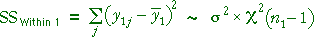
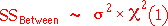

Distributions of sums of squares
The sums of squares within each of the two groups have chi-squared distributions whose degrees of freedom are the group sample size minus 1.


The within-group (residual) sum of squares is the sum of these and therefore has a chi-squared distribution with the sum of the degrees of freedom.
If the two group means are equal, the between-group (explained) sum of squares will have a chi-squared distribution with 1 degree of freedom (since the indicator variable is a single explanatory variable),

The between-group sum of squares will tend to be higher if the two group means differ.
Distribution of F ratio
If the null hypothesis is true (both groups have the same mean), the F ratio will therefore have an F distribution,
The p-value for the test is therefore the upper tail-area from this F distribution — it is the probability of getting an F ratio as large as the F-value that has been observed if both sample means are the same.
Simulation showing the distribution of F
The diagram below takes samples of sizes n1 = 20 and n2 = 7 from normal distributions with the same mean and standard deviation.
Click Accumulate and then take several samples. Observe that the F ratio has a distribution that is consistent with the theoretical F distribution since the null hypothesis holds.
Calculation of the p-value
The next diagram shows how the p-value for the test is obtained from the F distribution.
Initially the null hypothes is holds (both group means are equal). The p-value is the upper tail area of the F distribution. Click Another Data Set a few times to see how the p-value varies.
When the underlying group means are equal, all p-values between 0 and 1 are equally likely. For example, a p-value below 0.05 occurs with probability 0.05.
The slider alters the difference between the population means. Drag it fully to the right and take a few more samples.
When the group means are far apart, the p-value is likely to be close to 0.0. P-values near zero therefore provide evidence that the population means are different.